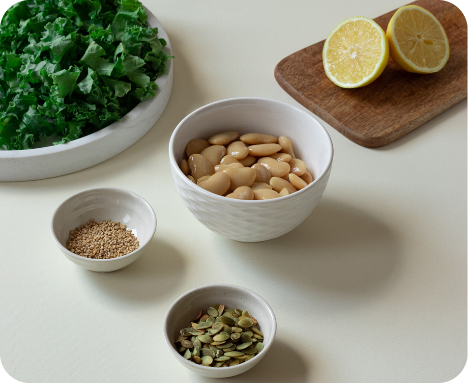
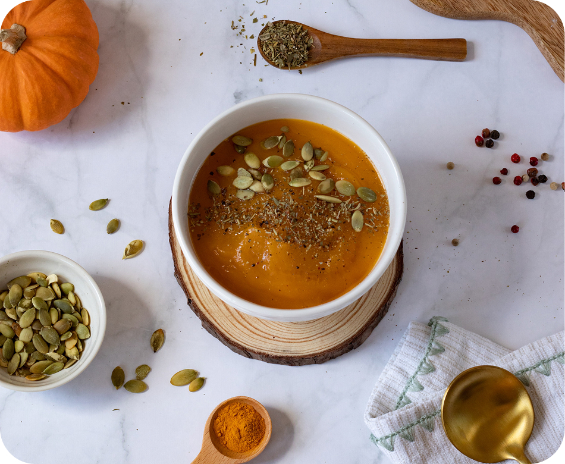

АРХИТЕКТУРА РАЦИОНА: КАК
СОБРАТЬ ПОНЯТНУЮ СИСТЕМУ
ПИТАНИЯ И ОБРЕСТИ ОПОРУ
В теме здорового образа жизни легко потерять контакт с собой среди громких советов и чужих правил. Но если посмотреть на рацион как на понятную систему, все становится прозрачным: питание — это твоя ежедневная опора и ресурс для насыщенной жизни.
Эта статья — удобный конструктор. Он поможет тебе легко создавать сытный, сбалансированный рацион, сохраняя твой личный ритм и свободу выбора.
КОНСТРУКТОР ДНЯ: РИТМ И РЕСУРС
Чтобы сохранять ровное состояние, ясный фокус и легкость в теле, важно учитывать естественные ритмы физиологии.
| ЗАВТРАК | ОБЕД | УЖИН |
|---|---|---|
| (запуск энергии) | (фокус и ресурс) | (восстановление) |
| Медленные углеводы Белок Жиры |
Сложные углеводы Белок Клетчатка Жиры |
Легкий белок Клетчатка (овощи/зелень) Углеводы (по выбору) |
ЗАВТРАК: БЕРЕЖНЫЙ ЗАПУСК ДНЯ
- Твоя задача: Подарить организму качественный старт и сохранить устойчивое чувство сытости на 3–4 часа.
- Формула наполнения: Медленные углеводы + Белок + Полезные жиры
- Мягкий ритуал: 1–2 стакана теплой воды за 20–30 минут до завтрака создают отличные условия для пробуждения ЖКТ и мягкого желчеоттока.
ОБЕД: РЕСУРС ДЛЯ ТВОИХ ЗАДАЧ
- Твоя задача: Поддерживать активный ритм дня. Обед дает наполнение, оставляет ясность в голове и сохраняет физический комфорт.
- Формула наполнения: Сложные углеводы + Клетчатка + Белок + Жиры
- Настройка: Если хочется сохранить лёгкость после еды, обрати внимание на баланс объема и качество углеводного блока — сложные углеводы отдают энергию постепенно.
УЖИН: ВОССТАНОВЛЕНИЕ И ТИШИНА
- Твоя задача: Помочь телу восстановиться, мягко переключить нервную систему в режим отдыха и подготовиться к глубокому сну.
- Формула наполнения: Легкий белок + Клетчатка (и сложные углеводы, если твой день был физически активным).
- Фокус внимания: Отдавай предпочтение теплым, комфортным блюдам — запеченной рыбе или птице с овощами, теплым салатам, окутывающим супам.
- Зеленый акцент: Добавляй свежую зелень и любимые овощи к приемам пищи. Это простая забота о твоей микробиоте и естественный источник легкой клетчатки.
ПЕРЕКУСЫ: ЧУВСТВИТЕЛЬНАЯ НАСТРОЙКА СЫТОСТИ
Перекус — это гибкий инструмент. Если твои задачи требуют больше энергии или паузы между основными приемами пищи превышают 4–5 часов, ты всегда можешь добавить комфортный промежуточный блок.
ВЫБИРАЕМ ТО, ЧТО ДАЕТ ДОЛГОСРОЧНЫЙ РЕСУРС
- Для сохранения ровной энергии: Отдавай преимущество белково-жировым сочетаниям и клетчатке. Сладкие и мучные перекусы дают быстрый подъем, за которым часто следует резкое ощущение усталости.
- Для плавного и устойчивого насыщения: Выбирай цельные комбинации продуктов.
| ЛЁГКОЕ НАПОЛНЕНИЕ | ПЛОТНЫЙ КОНСТРУКТОР |
|---|---|
| Горсть любимых орехов | Хумус + свежие овощные палочки (морковь, огурец, сельдерей) |
| Небольшая порция качественного творога | Цельнозерновой тост + творожный сыр + зелень |
| Кислые ягоды или фрукт (150–200 г) | Авокадо-тост или цельнозерновой лаваш с овощами и зеленью |
ПРИМЕР МЕНЮ НА НЕДЕЛЮ
Используй эту сетку как ориентал — твою наглядную опору для того, чтобы легко сочетать продукты в созидательную систему.
| ДЕНЬ | ЗАВТРАК | ОБЕД | УЖИН |
|---|---|---|---|
| ПН | Творог с горстью орехов и ягодами | Гречка с куриной грудкой, грибами и свежим овощным салатом | Рыбные котлеты с перечным соусом и зеленью |
| ВТ | Сырники с ягодами и натуральным йогуртом | Лапша удон с курицей, вешенками и зеленым луком | Запеканка из брокколи и цветной капусты |
| СР | Овсяноблин с адыгейским сыром, зеленью и красной рыбой | Финский сливочный суп с лососем | Котлеты из индейки и кабачков с булгуром |
| ЧТ | Гречка с орехами и маслом гхи | Спагетти карбонара с красным луком и свежим салатом | Запеченный лосось в медово-горчичном соусе с зеленым салатом |
| ПТ | Киноа на кокосовом молоке с ягодами | Кускус с креветками и овощами | Густой крем-суп из тыквы |
| СБ | Блинчики из цельнозерновой муки с лососем и зеленью | Ризотто с шампиньонами | Запеченная треска с рисом и помидорами черри |
| ВС | Тост с авокадо, зеленью и яйцом-пашот | Плотный чечевичный суп с мятой | Треска, тушенная с помидорами и зеленью |
ОСОЗНАННЫЙ ВЫБОР В ПОЛЬЗУ ЧИСТОГО РЕСУРСА
В концепции VMERU нет плохих продуктов или строгих табу. Есть еда, которая дает прозрачную энергию, и еда, которая требует от организма больше ресурса на усвоение. Ты самостоятельно регулируешь их присутствие в своей жизни.
ПРОДУКТЫ, ПРЕОБЛАДАНИЕ КОТОРЫХ СТОИТ ЗАМЕЩАТЬ ЦЕЛЬНОЙ ЕДОЙ ДЛЯ СОХРАНЕНИЯ ЯСНОСТИ И СИЛЫ
- Цельнозерновыми альтернативами: вместо изделий из белой муки высшего сорта и ультра обработанных сладостей.
- Свежим мясом и рыбой: вместо продуктов глубокой промышленной переработки (колбасы, сосиски).
- Домашними заправками и маслами: вместо готовых соусов со скрытыми сахарами.
- Цельными крупами долговременной варки: вместо каш быстрого приготовления, потерявших структуру клетчатки.
- Свежей или мягко приготовленной едой: сохраняя естественную пользу овощей.
Твоя система питания — это твоя внутренняя автономия. Настраивай её под свой ритм, исследуй, что дает тебе максимальный ресурс, и двигайся в комфортном темпе.
СТАТЬИ ПО ТЕМЕ

Отёки — это не просто эстетический вопрос, а сигнал о внутренних процессах организма. В этом чек-листе...
ЧИТАТЬ ДАЛЬШЕ
5 главных групп продуктов, из которых легко собирать сытный рацион без подсчета калорий.
ЧИТАТЬ ДАЛЬШЕ
Эта статья — удобный конструктор. Он поможет тебе легко создавать сытный, сбалансированный рацион, сохраняя твой личный ритм и свободу выбора.
ЧИТАТЬ ДАЛЬШЕ